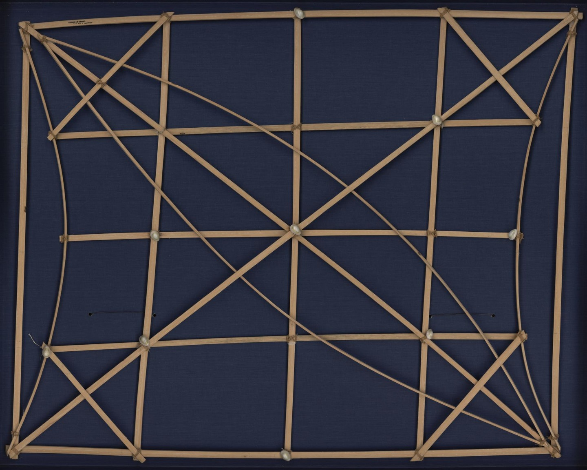

幾根細條綁成方框，裡面有直線、彎弧和交叉點，部分位置繫著貝殼。馬紹爾群島的這類物件，常被稱為棒圖（stick chart）。若把它想成航海者隨身展開的海圖，便會誤會它的用途。圖上的關係要在出發前學習、記住；到了海上，航海者面對的是會移動的浪，以及船身隨浪起伏的感覺。
馬紹爾群島的島嶼和環礁散布在海上，陸地低矮，航海者往往無法從遠處直接看見目的地。星的位置、鳥的飛行和風，都能成為線索；當地的波浪導航，則特別重視海浪如何受到島嶼影響。
遠方產生的湧浪，可以傳到離原來風暴很遠的海域。浪遇上島嶼、礁體與周圍海底地形，方向和強弱會改變。有些能量向外反射，有些浪在通過不同水深時轉向，繞過陸地後還可能交會。
因此，島的存在不只表現在地平線上。受過訓練的航海者，會從浪的組合辨認附近是否有陸地，並判斷自己與島的相對關係。這項本領依賴長期觀察，不是看見一個浪頭，就能套出目的地的方向。
我們站在岸邊看海，很容易只注意浪高或浪花。坐在船上，身體還會感到船被抬起、傾斜、向前俯下，以及不同方向的起伏交疊。航海者要從這些變化中，辨認比較持續的湧浪與附近的干擾。
Alson Kelen 在 2026 年的訪談裡說，他喜歡在夜間開始航程，因為那時更專注於感受湧浪；白天看見的風浪、反射等細節，反而可能干擾他的判斷。這是他描述自己的觀察方式，也說明「看海」不全靠眼睛。
把這份經驗寫成一段說明，讀者能知道該留意什麼，卻未必立刻感受得到。曾和馬紹爾航海者一起出海的研究者 Joseph Genz 就回憶，對方問他能不能感覺到某個浪時，他常常感覺不到。同坐一艘船，兩人注意到的東西仍有差別。
棒圖把海上複雜的變化整理成可以在岸上討論的形狀。有些偏重島嶼相對位置，有些則用來理解浪與島的關係。直條、彎條和貝殼的作用，必須連著製作者與教學情境看，不能假定所有圖都有同一套圖例。
美國國會圖書館收藏的一件 mattang 類棒圖，編目年代約為 1920 年代，來自 Majuro。館藏說明特別交代，它是訓練用的模型，沒有指向某一片實際地理區域；殼所示意的，可以是任一座島，而彎曲與交會的細條，表達浪受島嶼影響的關係。
學習者先藉著模型理解這些關係，再到海上把抽象形狀和實際起伏連起來。棒圖留在岸上，並不減少它的作用。它幫助人整理經驗，實際判斷仍得由航海者在不斷變化的環境中完成。

理解波浪導航，可以讓不同方法在同一片海上比較。2009 年發表的一項合作研究，由人類學者、海洋學者與航海者共同署名，結合訪談、隨船觀察、測浪浮標、衛星影像和波浪模型，研究航海者辨認的海況。
其中一種背風側的交會浪，能以主要湧浪經過島嶼周圍地形、產生折射來模擬。這讓研究者與航海者，有了可以對照的共同現象：哪些方向的浪在島後方相遇，船在那裡又如何移動。
但研究當時仍未完整解釋航海者提出的所有浪型。有些反射訊號沒有被浮標清楚量到，某些島與島之間的波浪概念，也還無法直接對應到海洋學模型。論文因此保留了儀器敏感度、用語差異與概念架構等可能。合作的成果包括找到對應，也包括說清楚哪些地方仍值得追查。
只保存棒圖，能留下材料、做法與形狀。要接續航海經驗，還需要能造、能航行的船，以及和熟練者一起出海的機會。馬紹爾的 Waan Aelõñ in Majel（WAM）便把獨木舟與航行放在文化復振工作裡。
WAM 在 2014 年刊載的報導回顧，Korent Joel 與 Alson Kelen 和 Genz 合作，記錄長者所知，並安排航行。2006 年，Joel 藉傳統方法帶領一艘遊艇往返 Kwajalein 與 Ujae；2010 年，Kelen 駕獨木舟前往 Aur，Joel 在追蹤船上，可在需要時透過無線電提供指導。
這些航程不等於拿著古物重演一次。參與者得準備船、等候風，協調誰能學習、誰能傳授，以及如何在航行中照應。那份報導也交代，某些知識的傳承受到親屬與地方權威規範。復振因此牽涉實際合作，也牽涉傳授者願意如何分享。
Kelen 在 2026 年受訪時提到，過去學習時常以東方較強的湧浪為依據，但他所談的那段時間，連續的西風讓較大的浪改由西方而來，島嶼與浪的相互影響也得重新判斷。熟悉一個模式，並不等於每次都遇到相同條件。
他也談到，今天航行可以帶著現代設備作安全備援。練習傳統判讀與準備備援，各有用途。航海知識延續到現在，包含如何在當下的船、天候與安全安排中使用，而不只是把過去的器物照原樣做出來。
在生活裡，我們也有一些難以只靠說明傳給別人的熟悉：聽出樂器哪裡不對、從麵團的觸感判斷狀態，或在常走的路上察覺變化。這些經驗可以記錄，也需要有人親自試、有人一起比較感受。當我們說自己「知道」一件事，或許可以想想，那份知道有多少來自讀過的資料，又有多少是在實際做的過程中慢慢分辨出來的。